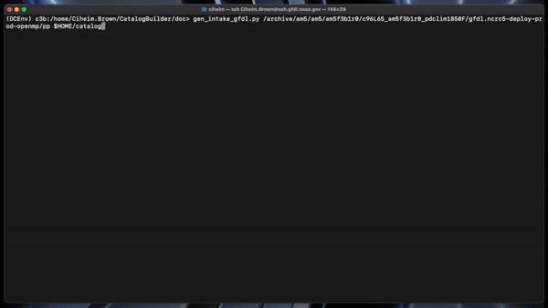
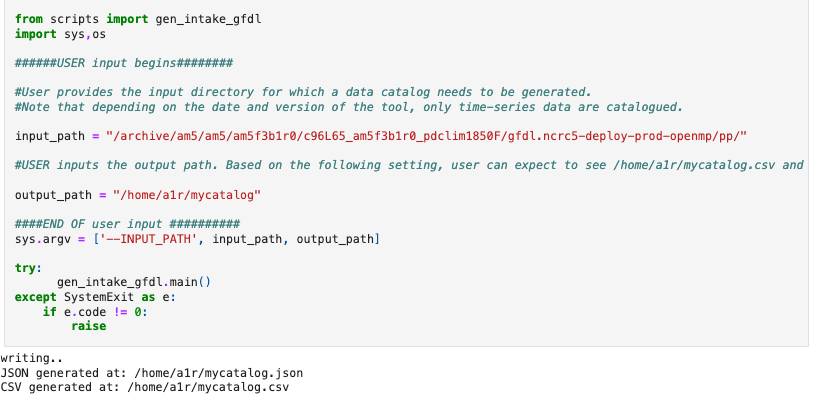

Generating data catalogs¶
There are a few ways to use the catalog builder. This page contains instructions to help you start using the tool.
Installation¶
You will need to install the Catalog Builder package to begin. The current recommended approach for installing the catalog builder is to install the tool as a pip package.
Cloning the repository¶
You’ll need to first clone the github repository:
With ssh
git clone git@github.com:NOAA-GFDL/CatalogBuilder.git
With https
https://github.com/NOAA-GFDL/CatalogBuilder.git
Installing the package¶
Now that you have a local copy of the source code, you are able to install the package. From the root of the repository, run:
pip install .
Note
This installation method is expected to change slightly when the package is uploaded to the Python Package index.
Configuration¶
A catalog template is a YAML file defining headerlist, input path template, input file template, and input/output paths. A template/configuration file is used for all catalog generation.
Using a custom template¶
A default configuration is used for catalog generation unless a custom configuration is provided. We recommend the use of a custom configuration file if you want to work with datasets and directories that are not quite GFDL post-processed directory oriented. Configs must be passed to the builder using the --config flag. See Flags here.
Here is an example configuration file.
HEADERLIST
Catalog headers (column names) are set with the HEADER LIST variable. The headerlist contains the expected column names of your catalog/csv file. This is usually determined by the users in conjuction with the ESM collection specification standards and the appropriate workflows.
#Catalog Headers
headerlist: ["activity_id", "institution_id", "source_id", "experiment_id",
"frequency", "realm", "table_id",
"member_id", "grid_label", "variable_id",
"time_range", "chunk_freq","platform","dimensions","cell_methods","standard_name","path"]
INPUT PATH TEMPLATE
The INPUT PATH TEMPLATE variable controls the expected directory structure of input data.
#Directory structure information
input_path_template = ['NA','NA','source_id','NA','experiment_id','platform','custom_pp','realm','cell_methods','frequency','chunk_freq']
For a directory structure like /archive/am5/am5/am5f3b1r0/c96L65_am5f3b1r0_pdclim1850F/gfdl.ncrc5-deploy-prod-openmp/pp the input_path_template is set as above.
We have NA in those values that do not match up with any of the expected headerlist (CSV columns), otherwise we simply specify the associated header name in the appropriate place. E.g. The third directory in the PP path example above is the model (source_id), so the third list value in input_path_template is set to ‘source_id’. We make sure this is a valid value in headerlist as well. The fourth directory, ‘am5f3b1r0’, does not map to an existing header value so we simply add NA in input_path_template for the fourth value.
INPUT FILE TEMPLATE
The INPUT FILE TEMPLATE variable controls the expected filename structure of the input data. This is used to grab relevant data stored in filename.
#Filename information
input_file_template = ['realm','temporal_subset','variable_id']
INPUT/OUTPUT PATH
The INPUT/OUTPUT PATH variables are used by the Catalog Builder to locate input data and store output to the proper location.
#Input directory and output info
input_path: "/archive/am5/am5/am5f7b10r0/c96L65_am5f7b10r0_amip/gfdl.ncrc5-deploy-prod-openmp/pp/"
output_path: "/home/a1r/github/noaa-gfdl/catalogs/c96L65_am5f7b10r0_amip" # ENTER NAME OF THE CSV AND JSON, THE SUFFIX ALONE. This can be an absolute or a relative path.
Creating a data catalog¶
Using the installed package¶
Catalogs are generated by the following command: gen_intake_gfdl.py <INPUT_PATH> <OUTPUT_PATH>
Output path argumment should end with the desired output filename WITHOUT a file ending. See example below.
gen_intake_gfdl.py /archive/am5/am5/am5f3b1r0/c96L65_am5f3b1r0_pdclim1850F/gfdl.ncrc5-deploy-prod-openmp/pp $HOME/catalog
This would create a catalog.csv and catalog.json in the user’s home directory.
{kind=link}
See Flags here.
From a Python script¶
Do you have a python script or a notebook where you could also include steps to generate a data catalog?
See example here
Here is another example with a custom configuration:
import sys, os
git_package_dir = '/home/a1r/git/forkCatalogBuilder-/'
sys.path.append(git_package_dir)
import catalogbuilder
from catalogbuilder.scripts import gen_intake_gfdl
######USER input begins########
#User provides the input directory for which a data catalog needs to be generated.
input_path = "/archive/John.Krasting/fre/FMS2024.02_OM5_20240724/CM4.5v01_om5b06_piC_noBLING/gfdl.ncrc5-intel23-prod-openmp/pp/"
#USER inputs the output path. Based on the following setting, user can expect to see /home/a1r/mycatalog.csv and /home/a1r/mycatalog.json generated as output.
output_path = "/home/a1r/tests/mycatalog-jpk-def"
#NOTE: If your input_path does not look like the above in general, you will need to pass a --config which is custom
#This is an example call to run catalog builder using a yaml config file.
configyaml = os.path.join(git_package_dir, 'catalogbuilder/scripts/configs/config_default.yaml')
#input_path = "/archive/am5/am5/am5f3b1r0/c96L65_am5f3b1r0_pdclim1850F/gfdl.ncrc5-deploy-prod-openmp/pp"
def create_catalog_from_config(input_path=input_path,output_path=output_path,configyaml=configyaml):
csv, json = gen_intake_gfdl.create_catalog(input_path=input_path,output_path=output_path,config=configyaml)
return(csv,json)
if __name__ == '__main__':
create_catalog_from_config(input_path,output_path) #,configyaml)
And an example with a default configuration:
import sys, os
git_package_dir = '/home/a1r/git/forkCatalogBuilder-/'
sys.path.append(git_package_dir)
import catalogbuilder
from catalogbuilder.scripts import gen_intake_gfdl
print(gen_intake_gfdl.__file__)
######USER input begins########
#User provides the input directory for which a data catalog needs to be generated.
input_path = "/archive/a1r/fre/FMS2024.02_OM5_20240724/CM4.5v01_om5b06_piC_noBLING/gfdl.ncrc5-intel23-prod-openmp/pp/"
#USER inputs the output path. Based on the following setting, user can expect to see /home/a1r/mycatalog.csv and /home/a1r/mycatalog.json generated as output.
output_path = "/home/a1r/tests/static-catalog"
#NOTE: If your input_path does not look like the above in general, you will need to pass a --config which is custom
####END OF user input ##########
#This is an example call to run catalog builder using a yaml config file.
configyaml = os.path.join(git_package_dir, 'configs/config-template.yaml')
def create_catalog_from_config(input_path=input_path,output_path=output_path): #,configyaml=configyaml):
csv, json = gen_intake_gfdl.create_catalog(input_path=input_path,output_path=output_path)#,verbose=True,config=configyaml)
return(csv,json)
if __name__ == '__main__':
csv,json = create_catalog_from_config(input_path,output_path)#,configyaml)
From Jupyter Notebook¶
Refer to this notebook to see how you can generate catalogs from a Jupyter Notebook
Using FRE-CLI (GFDL only)¶
1. Setup FRE-CLI Setup FRE-CLI through Lmod following their setup documentation.
# find the most recent version of fre
module avail fre
# load the fre module. replace <NN> with the latest version
module load fre/2025.<NN>
2. Call the builder
Generate a catalog by running:
fre catalog build $INPUT_PATH $OUTPUT_PATH
(OUTPUT_PATH should end with the desired output filename WITHOUT a file ending) See example below.
fre catalog build --overwrite /archive/path_to_data_dir ~/output
Expected output¶
The catalog builder tool generates a JSON catalog specification file and a CSV catalog in the specfied output directory with the specified name.
Arguments and Options¶
Arguments¶
All methods of catalog builder generation support direct input/output path passing.
Input path must be the 1st argument. Output path must be the 2nd.
Ex. gen_intake_gfdl.py /archive/Some.User/input-path ./output_path
Flags¶
–config - Allows for catalogs to be generated with a custom configuration. Requires path to YAML configuration file. (Ex. “–config custom_config.yaml”)
–overwrite - Overwrite an existing catalog at the given output path
–append - Append (without headerlist) to an existing catalog at the given output path
–slow - Activates slow mode which retrieves standard_name (or long_name) where possible. “Standard_name” must be in your input_path_template
–strict - Activates strict mode which validates catalog vocabulary during generation
–i - Optional method for passing input path
–o - Optional method for passing output path